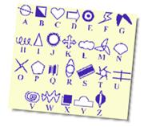
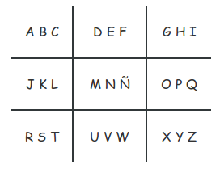
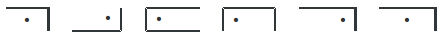
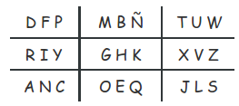
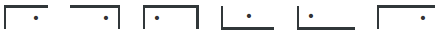
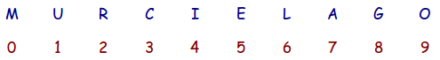

Claves y códigos secretos
A continuación te mostraremos cómo hacer tu propio código secreto. Hay muchos juegos que puedes practicar usando códigos, como búsqueda del tesoro o un juego de espía, o incluso puedes crear un código secreto para comunicarte con los demás miembros de tu Patrulla.
Los códigos son un lenguaje secreto que puedes compartir con tus compañeros.
Puedes hacer muchos códigos diferentes.
Haremos un código fácil usando el alfabeto y un dibujo similar al que empleamos para el juego de la vieja.
Primero dibuja algo como lo que sigue, colocando las letras del alfabeto tal como van

Luego para representar cada letra solo basta con que señales su ubicación en el recuadro con un punto.
Por ejemplo la palabra SCOUTS se representa de la siguiente manera

Si quieres hacerlo diferente, puedes variar el orden de las letras en el dibujo de La Vieja, y entregar una copia de esta “Clave” sólo a tus compañeros, de forma que sólo ellos puedan descifrar los mensajes.
Una forma sería

Con lo cual la misma palabra SCOUTS se representa de la siguiente manera

Así es completamente distinta, y solo la podrán descifrar los que tengan la “Clave” con el orden de las letras.
Otra forma muy sencilla de crear un código es sustituyendo letras por números, tal como se muestra a continuación, en el Código Murciélago

De esta manera una palabra como REPERTORIO se escribirá 25P52T9249
Ahora bien, como en el caso anterior, puedes personalizar este código, cambiando el orden de los números con respeto a las letras, y dando la “Clave” a quien desees.
Como ya te habrás dado cuenta, esto de crear un código secreto no es tan complicado, requiriendo más que nada imaginación y un poco de astucia.